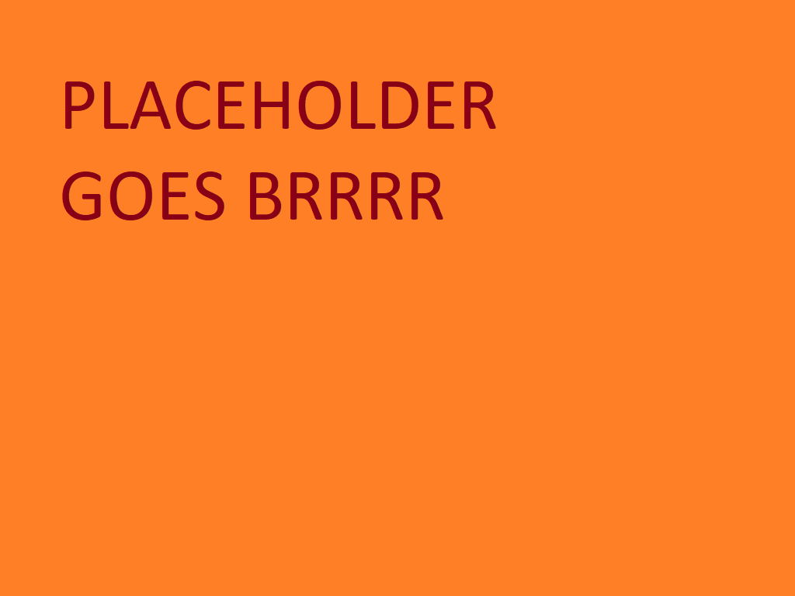

- HTML, CSS, Javascript
- Python
- C
- MS Office, LibreOffice
- GitHub, BitBucket, GitKraken
- język angielski - B2
- lutowanie THT
- CI/CD
- prawo jazdy kat. B, C
- gotowość do relokacji
- cierpliwość
- komunikatywność
- bardzo wysoka chęć rozwijania umiejętności
- łatwość uczenia się nowych narzędzi
Wyrażam zgodę na przetwarzanie moich danych osobowych dla potrzeb niezbędnych do realizacji procesu rekrutacji (zgodnie z
ustawą z dnia 10 maja 2018 roku o ochronie danych osobowych (Dz. Ustaw z 2018, poz. 1000) oraz zgodnie z Rozporządzeniem
Parlamentu Europejskiego i Rady (UE) 2016/679 z dnia 27 kwietnia 2016 r. w sprawie ochrony osób fizycznych w związku z
przetwarzaniem danych osobowych i w sprawie swobodnego przepływu takich danych oraz uchylenia dyrektywy 95/46/WE (RODO).